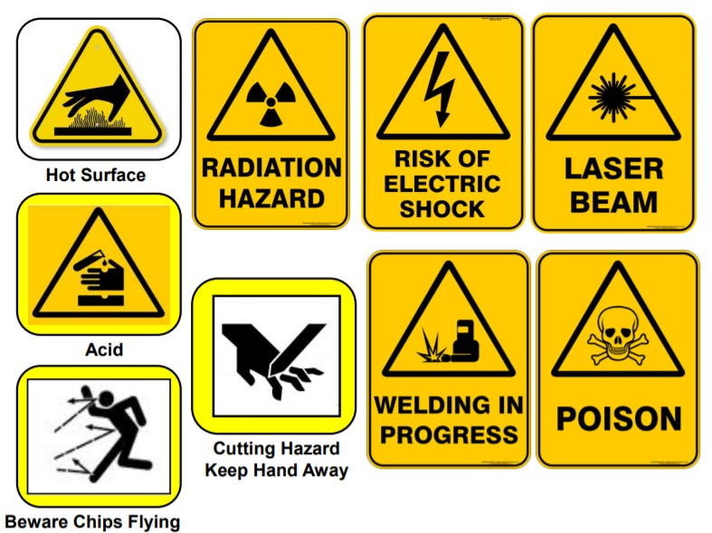
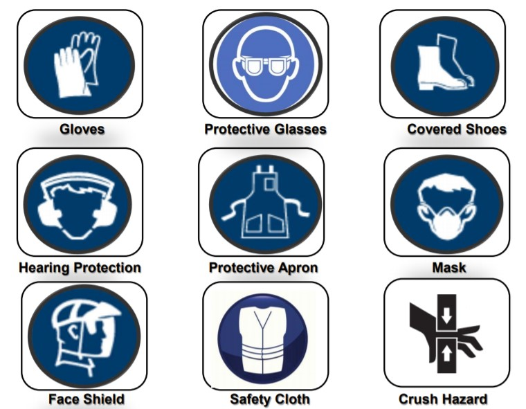

The Fablab is a place where you can make almost anything. It is a place to make your ideas into actual products. There
are many different apparatus available for use inside to allow you to unleash your creativity. However, this also means
that if you are not careful, you can pose a danger to not just yourself, but others as well.
In the Fablab, safety is the number 1 priority and everyone shares the same reponsibility of keeping everyone safe. As we deal with various tools and machinery, workplace health and safety
becomes very important for everyone. SP has their own code of conduct for Fablab and Workshops, as shown here.
In case of an emergency, what should you do?
When an emergency occurs, know who to call. Here are some hotlines to remember:
- For Ambulance service, call 995
- For SCDF, call 995.
- For Police, call 999.
In addition, SP has an emergency hotline (6772 1234) that should be contacted when an accident occurs.
When you contact SP's emergency hotline, do provide the following information:
- Name
- Location of accident.
- Type of emergency (e.g fire, violent bahaviour, chemical spill etc.)
For everyone's safety, all types of incidents should be reported, regardless of severity.
During Incident and Accident reporting:
- All work-related injuries should be accounted for to the lab staff or your lecturers/supervisors.
- If treatment is needed, either contact SP's Genral Office (6772 1206) or the emergency hotline (6772 1234)
- Do not downplay any sort of injury, and do not leave said injury unattended or untreated.
With emergency protocols out of the way, another important thing to note in the Fablab for safety reasons is attire.
For Males:

For Females:

In the Fablab, you will find different types of tools to work with. Depending on the tool, the dangers you could be
exposed to can range from being harmless to requiring professional supervision. To aid the average Joe, there are safety
placards placed in the Fablab to guide you on what dangers you could be exposed to, and what to watch out for.
Here are some examples of such safety placards you will find in the Fablab:

Warning Hazards (as shown below) are there to warn you of potential dangers you may be exposed to if not careful. They should not be ignored.

Some machines may require the use of Personal Protective Equipment (PPE) to keep you safe before use. Such PPE include:

In the Fablab, there are different types of hazards you can encounter. They can be separated into two types, mechanical and non-mechanical
hazards. Referenced from:
WSH Guide on Safe Use of Machineries
Mechanical hazards can include:
- Entanglement Hazards
- Cutting Hazards
- Crushing Hazards
- Impact Hazards
- Shearing Hazards
- Crushing Hazards
- Draw-in Hazards
- Friction and Abrasion Hazards
Non-Mechanical hazards can include:
- Fall from Heights
- Noise Hazards
- Heat-related Hazards
- Electrical Hazards
- Chemical Hazards
- Ergonomic Risk Factors (e.g. awkward postures, repetitive movements)
- Fatigue